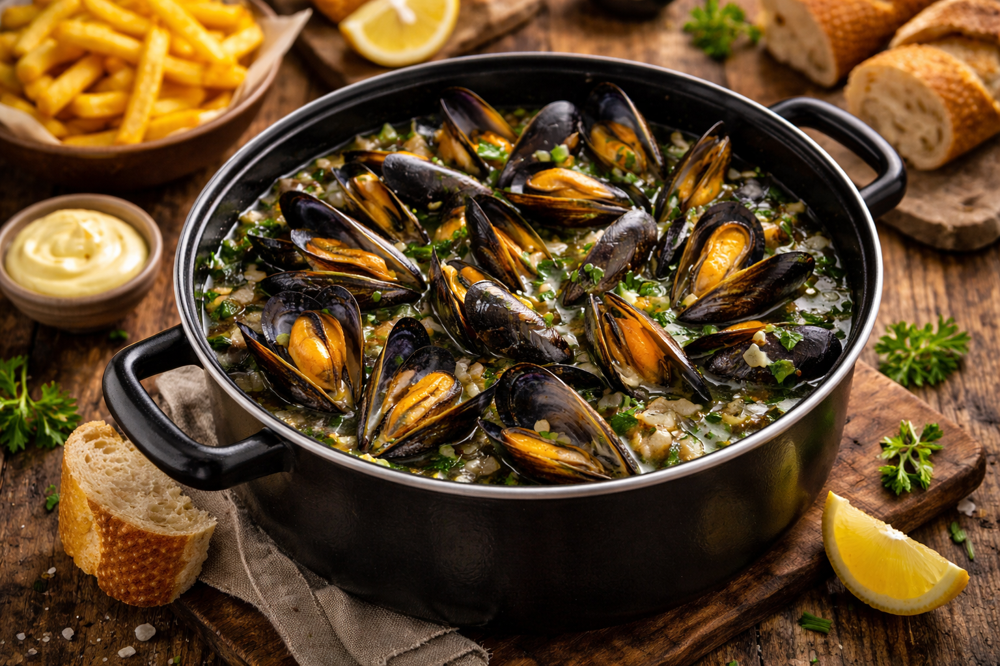

Version simple et traditionnelle des moules-frites. Pour une version plus savoureuse encore, découvrez la recette des moules aux légumes plus bas.
1. Laver les moules à l’eau froide. 2. Retirer les barbes. 3. Jeter les moules ouvertes ou cassées. 4. Éplucher et émincer l’oignon. 5. Couper le céleri en petits morceaux. 6. Hacher l’ail. 7. Chauffer l’huile d’olive dans la casserole. 8. Faire revenir l’oignon et le céleri 3 minutes. 9. Ajouter l’ail et mélanger. 10. Ajouter les moules. 11. Verser un petit verre d’eau. 12. Mélanger une seule fois. 13. Couvrir immédiatement. 14. Cuire 8 à 10 minutes sans remuer. 15. Secouer légèrement la casserole en fin de cuisson. 16. Saler et poivrer. 17. Parsemer de persil frais. 18. Servir dans une assiette creuse avec le jus. 19. Le jus peut être dégusté comme un bouillon. 20. Servir avec des frites croustillantes. ============================== INFORMATIONS ET CONSEILS ============================== Les moules-frites sont un plat emblématique de la Belgique et de la côte de la mer du Nord. Ce petit crustacé vit en grappes fixées aux rochers et reste fermé dans la nature. C’est uniquement à la cuisson qu’il s’ouvre pour révéler toute sa saveur. Bien qu’elles puissent sembler peu appétissantes au premier regard, les moules sont un véritable délice pour petits et grands. Pour manger facilement, commencez par en ouvrir une et gardez les deux coquilles attachées. Vous pourrez ensuite l’utiliser comme une pince pour attraper les autres sans vous salir les doigts. Prévoyez un grand bol pour déposer les coquilles vides : elles prennent vite de la place dans l’assiette. ⚠️ Si une moule reste fermée après cuisson, jetez-la : elle pourrait être impropre à la consommation. 👉 Pour une version encore plus savoureuse, essayez la recette des moules aux légumes.